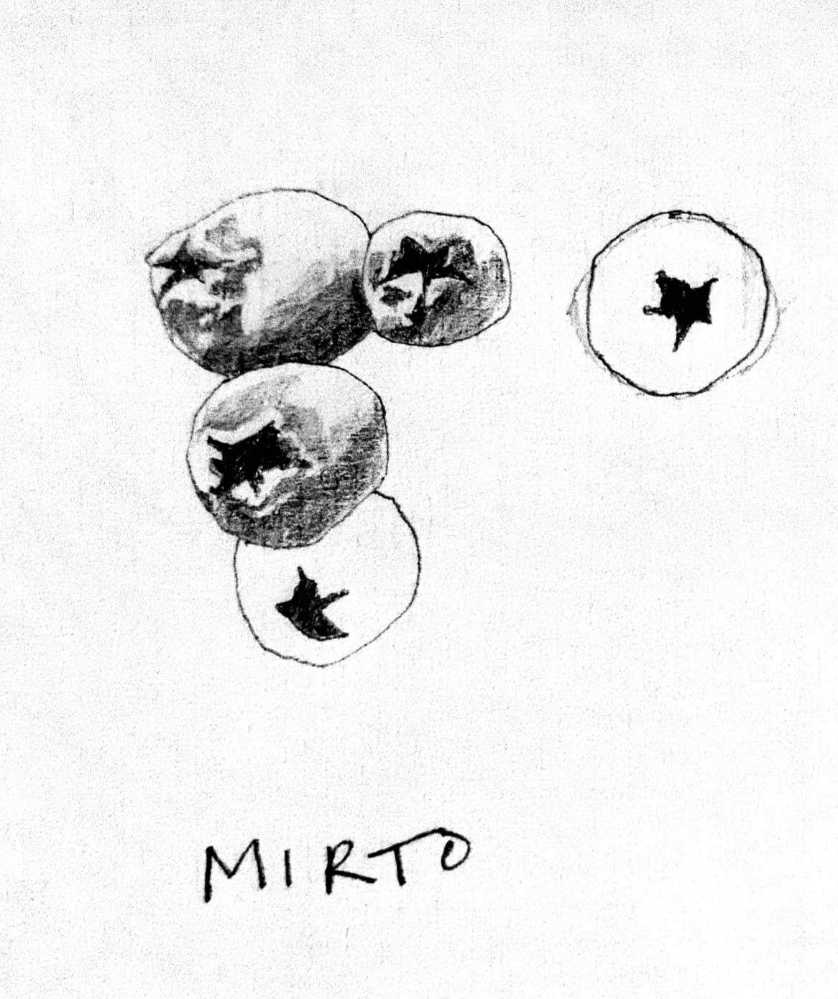

Our Mission
Stintino, a small village on the northern coast of Sardinia, was once known for its thriving tuna fishing industry. But like many places shaped by tradition, it has struggled under the weight of mass tourism. We were invited to imagine how Stintino and its people might reclaim and renew their rich cultural heritage.
What we discovered was a place with a deep-rooted identity centered around food. Yet we also saw signs of decline: pasta shops permanently closed, traditions disappearing, fewer handmade products than ever before. In the local library, we unearthed old cookbooks revealing a past diet shaped by wild plants and local ingenuity—nutrient-rich, seasonal, and far less regulated than today’s sanitized food systems. These were the foods of the Blue Zones, places where people have historically lived longer, healthier lives. But in today’s culture of food fear, where bacteria are treated as enemies rather than allies, such diets are nearly impossible to recreate.
Still, we believe they can be reimagined.
Our mission is to work closely with locals: cooking together, sharing stories, and learning hands-on techniques before they disappear. We’re building an archive of recipes and oral histories, documented not just in words but in gestures, scents, tastes, and traditions passed down through generations. Our goal is to preserve what matters most—what the community itself decides is worth saving—through collective conversation and shared meals.
How We Use Food as a Tool
In Stintino, we began with mirto, a wild plant traditionally used to make a sweet liqueur. Through experimentation, we found it could do much more: flavor meats, be preserved with salt into an aromatic sauce with umami qualities like ketchup, or reduced into a syrup to accompany chicken liver pâté, replacing the usual grape must. It’s a small example of how local ingredients, when reimagined, can bridge the past and future.
Just beyond the village, we came across the haunting remains of a salt marsh. Its stone ruins—once part of a thriving salt economy—now sit vacant, while tourists kite surf in its shadow. In homage to this forgotten industry, we collected seawater from the marsh and used traditional sun-evaporation methods to produce a salt unique to Stintino. What if the salt beds were revived sustainably, with the knowledge we have today? Could they offer the community a new identity rooted in ancestral knowledge?
The Tuna Museum of Stintino is another reminder of a past not yet fully let go, perhaps because letting go would leave an uncomfortable question behind: without tuna fishing, who are we?
During a tour, we learned about garum, a fermented sauce made from tuna offal once common in Roman cuisine and still remembered in Stintino—though not fondly. Locals recalled it as a foul, rotting substance. But garum has recently returned in modern gastronomy, appreciated for its deep umami flavor. We decided to experiment ourselves, eventually producing a refined version that could complement fish crudo and enrich sauces. Ironically, we later discovered garum was also made in our own hometown of Pontevedra.
Working with locals like Giorgio, we learned simple but powerful techniques. He showed us how to peel and marinate artichoke stalks—something most people discard—in lemon, olive oil, and salt. While cooking his family’s calamari pasta recipe, Giorgio spoke about the history of Stintino, his deep connection to food, and his sadness at how quickly food knowledge and diversity are disappearing.
These stories resonate far beyond Sardinia.
Our project is designed to be adaptable, rooted in any place where traditions are at risk. We believe in sustainability, not just ecologically but culturally. We aim to cultivate ecosystems—biological and social—that support not only human life, but all life.
Through storytelling, food, and the building of living archives, we aim not just to preserve what was, but to lay the foundations for what could be. We believe the future lies in remembering, and reimagining, the past.